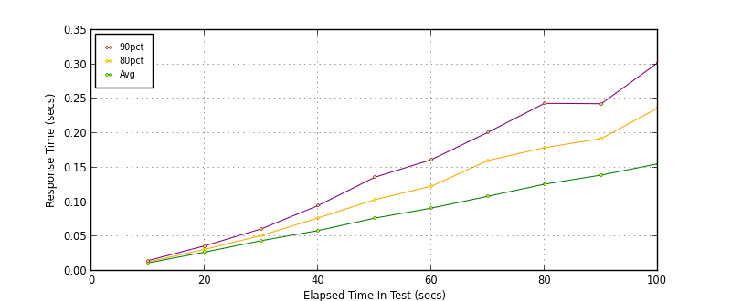
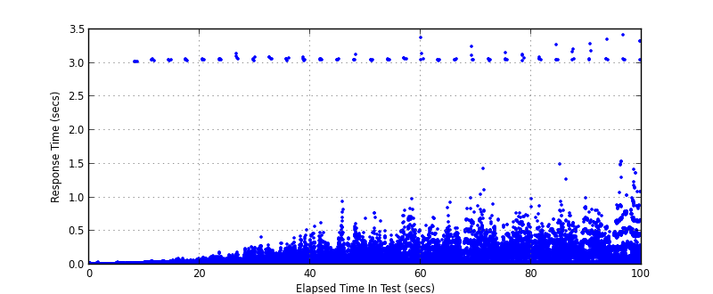
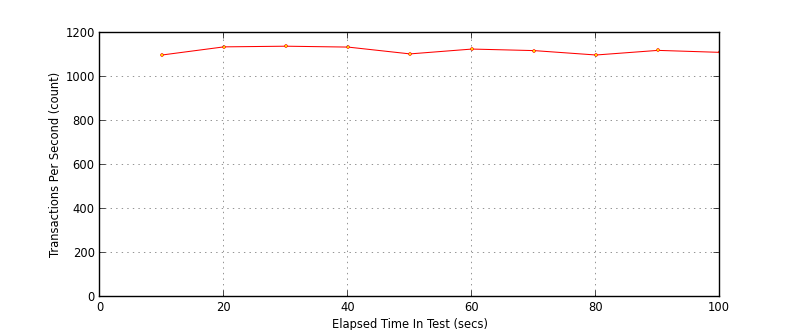
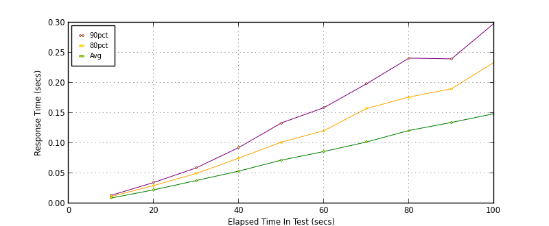
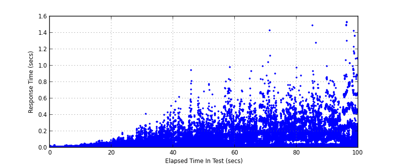

Performance Results Report
Summary
transactions: 112220
errors: 144
run time: 100 secs
rampup: 100 secs
test start: 2016-12-07 16:41:25
test finish: 2016-12-07 16:43:05
time-series interval: 10 secs
workload configuration:
| group name | threads | script name |
|---|
| user_group-1 | 20 | v_get.py |
| user_group-2 | 20 | v_get.py |
| user_group-3 | 20 | v_get.py |
| user_group-4 | 20 | v_get.py |
| user_group-5 | 20 | v_get.py |
| user_group-6 | 20 | v_get.py |
| user_group-7 | 20 | v_get.py |
| user_group-8 | 20 | v_get.py |
| user_group-9 | 20 | v_get.py |
All Transactions
Transaction Response Summary (secs)
| count | min | avg | 80pct | 90pct | 95pct | max | stdev |
|---|
| 112220 | 0.005 | 0.084 | 0.129 | 0.187 | 0.247 | 3.422 | 0.135 |
Interval Details (secs)
| interval | count | rate | min | avg | 80pct | 90pct | 95pct | max | stdev |
|---|
| 1 | 11002 | 1100.20 | 0.005 | 0.012 | 0.013 | 0.015 | 0.017 | 3.025 | 0.058 |
| 2 | 11375 | 1137.50 | 0.007 | 0.027 | 0.031 | 0.036 | 0.040 | 3.057 | 0.099 |
| 3 | 11402 | 1140.20 | 0.008 | 0.044 | 0.051 | 0.061 | 0.071 | 3.140 | 0.115 |
| 4 | 11367 | 1136.70 | 0.008 | 0.059 | 0.077 | 0.095 | 0.136 | 3.095 | 0.106 |
| 5 | 11058 | 1105.80 | 0.008 | 0.077 | 0.104 | 0.136 | 0.188 | 3.123 | 0.118 |
| 6 | 11277 | 1127.70 | 0.010 | 0.091 | 0.123 | 0.162 | 0.238 | 3.081 | 0.124 |
| 7 | 11209 | 1120.90 | 0.009 | 0.108 | 0.160 | 0.201 | 0.268 | 3.375 | 0.144 |
| 8 | 11005 | 1100.50 | 0.010 | 0.126 | 0.179 | 0.244 | 0.307 | 3.157 | 0.141 |
| 9 | 11217 | 1121.70 | 0.010 | 0.139 | 0.192 | 0.243 | 0.335 | 3.278 | 0.142 |
| 10 | 11128 | 1112.80 | 0.009 | 0.156 | 0.237 | 0.303 | 0.446 | 3.422 | 0.183 |
Graphs
Response Time: 10 sec time-series

Response Time: raw data (all points)

Throughput: 5 sec time-series

Custom Timer: GET
Timer Summary (secs)
| count | min | avg | 80pct | 90pct | 95pct | max | stdev |
|---|
| 112035 | 0.004 | 0.079 | 0.127 | 0.185 | 0.243 | 1.533 | 0.091 |
Interval Details (secs)
| interval | count | rate | min | avg | 80pct | 90pct | 95pct | max | stdev |
|---|
| 1 | 10997 | 1099.70 | 0.004 | 0.009 | 0.011 | 0.013 | 0.015 | 0.030 | 0.003 |
| 2 | 11375 | 1137.50 | 0.005 | 0.022 | 0.030 | 0.035 | 0.038 | 0.091 | 0.009 |
| 3 | 11402 | 1140.20 | 0.007 | 0.038 | 0.050 | 0.059 | 0.069 | 0.269 | 0.020 |
| 4 | 11367 | 1136.70 | 0.007 | 0.054 | 0.075 | 0.093 | 0.133 | 0.512 | 0.041 |
| 5 | 11058 | 1105.80 | 0.006 | 0.072 | 0.102 | 0.133 | 0.185 | 0.943 | 0.065 |
| 6 | 11277 | 1127.70 | 0.009 | 0.086 | 0.121 | 0.159 | 0.232 | 0.984 | 0.078 |
| 7 | 11209 | 1120.90 | 0.008 | 0.102 | 0.157 | 0.198 | 0.262 | 0.991 | 0.090 |
| 8 | 11005 | 1100.50 | 0.008 | 0.121 | 0.176 | 0.241 | 0.304 | 1.430 | 0.102 |
| 9 | 11217 | 1121.70 | 0.008 | 0.134 | 0.190 | 0.240 | 0.331 | 1.494 | 0.104 |
| 10 | 11128 | 1112.80 | 0.008 | 0.149 | 0.234 | 0.299 | 0.442 | 1.533 | 0.143 |
Graphs
Response Time: 10 sec time-series

Response Time: raw data (all points)

Throughput: 10 sec time-series